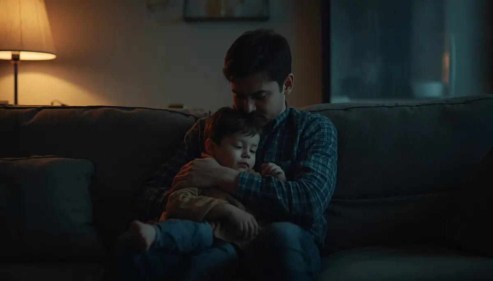
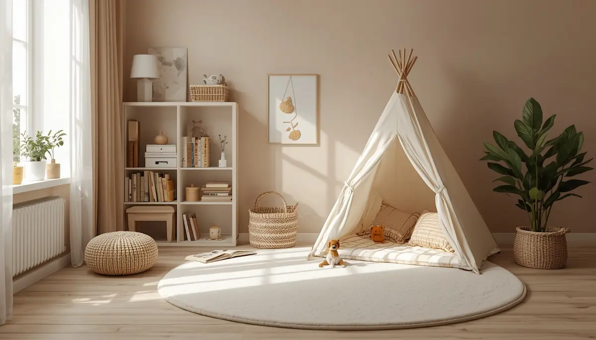
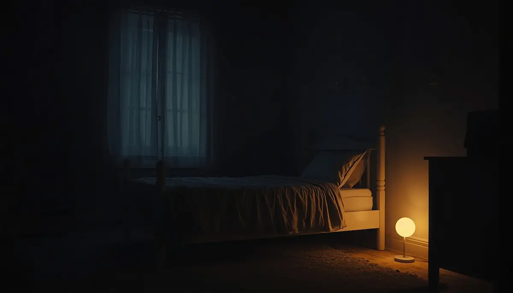

Ansiedad infantil: gestión del estrés y los miedos
La ansiedad en la infancia es una respuesta natural del organismo ante situaciones percibidas como amenazantes o inciertas, pero cuando se prolonga o intensifica, puede interferir de forma notable en el bienestar diario del menor. Acompañar estos momentos con empatía, validación emocional y recursos prácticos ayuda a transformar el miedo en seguridad. He reunido aquí una guía completa para comprender el estrés infantil, reconocer sus señales y ofrecer herramientas de regulación emocional en el hogar. Pincha en cada tarjeta para profundizar en cada tema.

Comprender la ansiedad y el miedo en la infancia
Descubre por qué surgen los miedos evolutivos y de qué manera la comprensión empática alivia la tensión emocional del menor.
La respuesta de estrés y el cerebro emocional infantil
Conoce cómo funciona la amígdala y el sistema nervioso ante la sobrecarga de estímulos, y cómo devolver la calma al organismo.

Identificar señales de alerta y somatizaciones
Aprende a reconocer indicios físicos del estrés como dolores de cabeza, molestias estomacales o cambios repentinos en la conducta.

Crear un refugio seguro de calma en el hogar
Estrategias prácticas para diseñar espacios y rutinas predecibles que reduzcan la incertidumbre y aporten seguridad afectiva.

Técnicas de respiración y regulación emocional
Juegos de respiración consciente, el rincón de la calma y herramientas lúdicas para liberar la tensión acumulada durante el día.

Acompañar miedos nocturnos y pensamientos recurrentes
Cómo gestionar la preocupación nocturna, la resistencia a dormir solo y los temores irracionales desde una perspectiva respetuosa.
Afrontar la ansiedad escolar y social
Herramientas para la transición al colegio, el miedo al rendimiento académico y la integración en grupos de iguales.
Fortalecer la resiliencia y la seguridad personal
Fomentar la confianza en los propios recursos internos para que el menor afronte los retos cotidianos con autonomía y tranquilidad.
❤️ Continúa profundizando en la calma y el vínculo
Para acompañar la gestión emocional y los miedos de forma completa, te sugerimos explorar estos recursos:
- 🎙️ Escucha el podcast: El cerebro del niño en plena rabieta (Ep. 01)
- 📥 Descarga el recurso práctico: Cómo Hablar de las Emociones Difíciles (PDF)